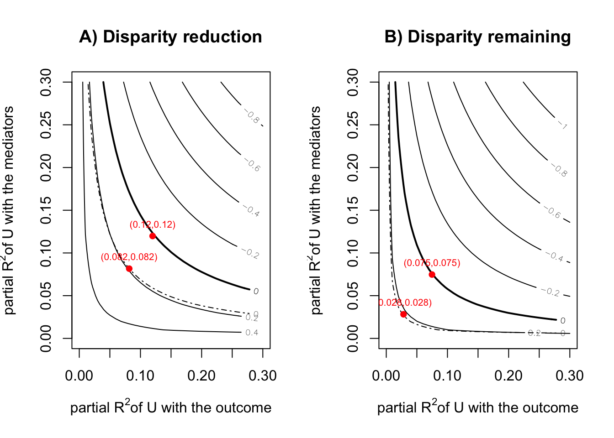

library(tidyverse)
library(cfdecomp)
library(gapclosing)
library(causal.decomp)
d <-
sMIDUS |>
transmute(Y = health |> as.numeric(), # outcome
T = edu |> as.numeric(), # treatment (continuous)
T2 = edu |> case_match(4:6 ~ 0, # treatment (binary)
7:9 ~ 1,
.default = NA) |> factor(),
X = racesex |> factor(levels = c("1", "4", "2", "3")), # note!
L1 = lowchildSES |> as.numeric(),
L2 = abuse |> as.numeric(),
C1 = age |> as.numeric(),
C2 = stroke |> as.numeric(),
C3 = T2DM |> as.numeric(),
C4 = heart |> as.numeric()) |>
mutate(across(L1:C4, \(.x){.x - mean(.x, na.rm = TRUE)})) |>
tibble()Causal Decomposition Analysis
前準備
continuuous mediator
cfdecomp
- Sudharsanan and Bijlsma (2021) の方法。mediatorの値をシミュレーションで複数生成するのが特徴
# cfd.mean
fit_cfdecomp <-
cfdecomp::cfd.mean(
formula.y = 'Y ~ X + T + X:T + L1 + L2 + C1 + C2 + C3 + C4',
formula.m = 'T ~ X + C1 + C2 + C3 + C4',
mediator = 'T',
group = 'X',
data = d |> data.frame(),
family.y = 'gaussian',
family.m = 'gaussian',
bs.size = 50,
mc.size = 10,
alpha = 0.05
)fit_cfdecomp$out_nc_m
1 4 2 3
1 7.704393 5.878511 7.100601 6.334574
2 7.684907 5.893482 7.078147 6.504993
3 7.667103 5.792513 7.064230 6.331297
4 7.691473 5.832407 7.094649 6.448269
5 7.702502 5.867025 7.084150 6.302879
6 7.707649 5.881564 7.073169 6.348328
7 7.698524 5.863295 7.094253 6.304080
8 7.665428 5.934105 7.077088 6.393080
9 7.687736 5.849997 7.069869 6.413267
10 7.691149 5.867068 7.097231 6.395584
11 7.717062 5.875149 7.083784 6.311631
12 7.714051 5.841621 7.081830 6.427463
13 7.720328 5.865250 7.084813 6.451981
14 7.716165 5.781157 7.065282 6.483936
15 7.701326 5.931750 7.110469 6.480753
16 7.713160 5.909803 7.113075 6.471447
17 7.717832 5.793296 7.100073 6.395649
18 7.721109 5.873599 7.059873 6.346348
19 7.706348 5.847319 7.067505 6.412451
20 7.711646 5.830050 7.082999 6.401420
21 7.692526 5.825116 7.072620 6.470432
22 7.720256 5.818086 7.109367 6.362887
23 7.687258 5.858049 7.071935 6.427542
24 7.779983 5.917717 7.064179 6.440181
25 7.687712 5.880672 7.070538 6.392827
26 7.681760 5.874938 7.072690 6.387883
27 7.723142 5.922137 7.074596 6.458075
28 7.745995 5.868351 7.109323 6.394674
29 7.675111 5.874267 7.080646 6.400481
30 7.704231 5.869453 7.084789 6.438085
31 7.703909 5.828574 7.069695 6.400884
32 7.723633 5.923871 7.101306 6.442652
33 7.704270 5.940003 7.073209 6.348928
34 7.690021 5.863546 7.141164 6.350132
35 7.713714 5.935156 7.068561 6.379914
36 7.701639 5.803481 7.090905 6.380944
37 7.663258 5.898129 7.065360 6.451323
38 7.700254 5.880185 7.038593 6.495530
39 7.740043 5.857458 7.052444 6.229921
40 7.675637 5.903854 7.053284 6.370314
41 7.720521 5.804465 7.127913 6.454960
42 7.722971 5.832164 7.059062 6.404134
43 7.718257 5.865445 7.110773 6.377804
44 7.710481 5.916549 7.056362 6.351512
45 7.693268 5.862944 7.063951 6.447388
46 7.678086 5.846925 7.073370 6.380035
47 7.723755 5.911177 7.075948 6.456036
48 7.677894 5.949973 7.048513 6.405711
49 7.718471 5.880965 7.061658 6.505462
50 7.676996 5.882907 7.099679 6.596813
$out_cf_m
1 4 2 3
1 7.695237 7.698664 7.714275 7.698376
2 7.692037 7.735170 7.708061 7.714884
3 7.662060 7.669484 7.678900 7.629026
4 7.692625 7.730004 7.692944 7.727442
5 7.703100 7.676401 7.707583 7.680340
6 7.692301 7.704222 7.711041 7.705918
7 7.694546 7.747794 7.717056 7.698930
8 7.662324 7.658380 7.681429 7.643902
9 7.672684 7.694050 7.695842 7.699512
10 7.666396 7.665698 7.676986 7.634029
11 7.731539 7.728737 7.725253 7.689596
12 7.718414 7.677185 7.721105 7.718532
13 7.727804 7.725323 7.732888 7.713343
14 7.700645 7.691775 7.700034 7.693086
15 7.693895 7.700015 7.690966 7.660751
16 7.705284 7.730238 7.701869 7.703176
17 7.715922 7.735389 7.729652 7.730373
18 7.729834 7.708581 7.740596 7.716448
19 7.727479 7.681980 7.725371 7.715341
20 7.718810 7.699963 7.723112 7.709143
21 7.690483 7.710145 7.714376 7.704448
22 7.710002 7.708093 7.729129 7.701050
23 7.676221 7.676947 7.689312 7.657328
24 7.786247 7.790737 7.794220 7.774169
25 7.686563 7.700556 7.700895 7.692829
26 7.685353 7.692371 7.698384 7.675953
27 7.725504 7.745133 7.735270 7.716700
28 7.747605 7.728458 7.759898 7.731043
29 7.679783 7.643081 7.686112 7.665649
30 7.704130 7.699832 7.720783 7.721398
31 7.701701 7.710872 7.713634 7.678175
32 7.735713 7.726618 7.730834 7.721670
33 7.696643 7.697963 7.702217 7.712556
34 7.704079 7.707784 7.701126 7.679178
35 7.716738 7.713484 7.721166 7.720744
36 7.702610 7.693181 7.710453 7.682322
37 7.686079 7.703241 7.703538 7.694242
38 7.695140 7.706969 7.701521 7.704428
39 7.726793 7.741675 7.727676 7.697694
40 7.670291 7.660500 7.683376 7.666899
41 7.713675 7.707159 7.724040 7.713228
42 7.723779 7.761976 7.739969 7.705372
43 7.712476 7.713428 7.715712 7.685084
44 7.704671 7.722937 7.717555 7.698043
45 7.684617 7.724854 7.705855 7.684188
46 7.700869 7.696082 7.695639 7.658616
47 7.735210 7.731111 7.732692 7.722269
48 7.690006 7.728187 7.703978 7.687452
49 7.710897 7.730958 7.717505 7.715660
50 7.684738 7.694305 7.692742 7.681102
$out_nc_quantile_m
1 4 2 3
2.5% 7.665805 5.792689 7.049397 6.303149
50% 7.704251 5.868902 7.075272 6.401152
97.5% 7.744656 5.938913 7.124575 6.505357
$out_cf_quantile_m
1 4 2 3
2.5% 7.663240 7.658857 7.679469 7.636250
50% 7.702156 7.707471 7.712338 7.699221
97.5% 7.744930 7.758785 7.755555 7.730893
$out_nc_y
1 4 2 3
1 7.609364 6.718684 7.341827 7.002085
2 7.628486 6.719177 7.294239 7.052794
3 7.595029 6.716448 7.336332 6.978392
4 7.636489 6.711188 7.305312 6.893564
5 7.579541 6.660990 7.316580 6.975759
6 7.580596 6.700170 7.288052 6.998277
7 7.595183 6.711373 7.332799 7.012144
8 7.551420 6.644580 7.306586 7.013259
9 7.582326 6.707404 7.296872 6.987075
10 7.589799 6.677915 7.328206 6.971000
11 7.614199 6.720911 7.339720 6.868702
12 7.586114 6.689092 7.351506 7.026881
13 7.622678 6.682343 7.325961 6.977455
14 7.603960 6.650643 7.338078 7.110627
15 7.579252 6.724402 7.317658 6.975170
16 7.611930 6.774817 7.335448 6.945007
17 7.585327 6.647768 7.341476 6.935480
18 7.576620 6.666223 7.322488 6.842111
19 7.575377 6.692609 7.320514 7.008304
20 7.642213 6.704353 7.360568 6.919576
21 7.578390 6.697662 7.305599 7.009812
22 7.623193 6.667674 7.323701 6.975625
23 7.603659 6.720316 7.327473 6.977863
24 7.624144 6.785678 7.330341 6.934198
25 7.591184 6.740607 7.296366 7.087310
26 7.580709 6.697542 7.305766 6.971515
27 7.596846 6.736814 7.309232 6.977437
28 7.626346 6.705490 7.365605 6.953224
29 7.588795 6.682027 7.350720 7.021670
30 7.598572 6.671137 7.332563 7.050782
31 7.663353 6.674185 7.316531 6.956455
32 7.638913 6.654991 7.315467 6.943161
33 7.583040 6.744792 7.315880 7.050680
34 7.587131 6.745807 7.315240 7.040534
35 7.629869 6.777861 7.320697 6.987942
36 7.633211 6.690888 7.296936 7.042209
37 7.586876 6.690698 7.304879 7.001249
38 7.605630 6.641577 7.312473 7.054762
39 7.578209 6.702098 7.346856 6.861277
40 7.615791 6.693407 7.275010 6.904633
41 7.619558 6.629054 7.335635 6.968320
42 7.597071 6.722200 7.301024 6.909407
43 7.653331 6.665569 7.320626 6.992004
44 7.608243 6.725489 7.387248 7.060275
45 7.563750 6.676142 7.308825 6.848430
46 7.614122 6.674357 7.303363 6.924984
47 7.596193 6.694495 7.306756 6.901427
48 7.606979 6.738551 7.326250 7.075850
49 7.593624 6.698417 7.340698 7.080536
50 7.543299 6.771432 7.302208 6.976786
$out_cf_y
1 4 2 3
1 7.607414 7.241627 7.491580 7.233985
2 7.629989 7.175883 7.438672 7.212483
3 7.593847 7.247442 7.492807 7.189440
4 7.636815 7.247154 7.413713 7.170191
5 7.579692 7.455758 7.484690 7.201809
6 7.576799 7.155861 7.400021 7.370657
7 7.594346 7.214699 7.435885 7.201016
8 7.550623 7.151088 7.492054 7.540559
9 7.578009 7.233869 7.443912 7.093525
10 7.584653 7.362574 7.447179 7.274074
11 7.617740 7.272451 7.504440 7.298578
12 7.587291 7.339500 7.496442 7.085919
13 7.624523 7.385366 7.442322 7.356935
14 7.599690 7.218713 7.469391 7.235977
15 7.577244 7.383210 7.436937 7.392177
16 7.609999 7.393361 7.470339 7.195733
17 7.584932 7.420018 7.491768 7.261574
18 7.578244 7.254377 7.458756 7.223458
19 7.580229 7.269746 7.464720 7.195017
20 7.643505 7.154219 7.509154 7.172263
21 7.577978 7.352014 7.478805 7.269683
22 7.620846 7.433312 7.479854 7.302266
23 7.600740 7.173616 7.491643 7.306826
24 7.625785 7.277016 7.473609 7.127676
25 7.591045 7.274529 7.444616 7.291411
26 7.581488 7.264959 7.465865 7.008815
27 7.597288 7.414300 7.441858 7.187059
28 7.626680 7.300014 7.496952 7.040814
29 7.589927 7.158867 7.460670 7.154384
30 7.598552 7.174590 7.487488 7.261998
31 7.662883 7.166347 7.477567 7.374014
32 7.641907 7.242302 7.487043 7.168227
33 7.581495 7.313520 7.479004 7.389798
34 7.590214 7.370308 7.474344 7.297419
35 7.630770 7.325501 7.430298 7.332733
36 7.633509 7.268941 7.415104 7.397309
37 7.592106 7.105822 7.426028 7.199093
38 7.604581 7.172293 7.460978 7.311739
39 7.575793 7.168612 7.484473 7.132777
40 7.614368 7.213674 7.416985 7.150848
41 7.617792 7.227409 7.463862 7.133855
42 7.597207 7.443558 7.387119 7.053380
43 7.651733 7.302834 7.477593 7.174305
44 7.606760 7.238119 7.544200 7.360466
45 7.561765 7.197407 7.476156 7.196137
46 7.621505 7.178989 7.430615 7.389787
47 7.599247 7.233115 7.424585 7.335626
48 7.610071 7.200206 7.495498 7.266563
49 7.592124 7.159419 7.512929 7.217993
50 7.545320 7.359588 7.435835 7.243914
$out_nc_quantile_y
1 4 2 3
2.5% 7.554194 6.642253 7.289444 6.851321
50% 7.596958 6.698040 7.320570 6.977659
97.5% 7.650829 6.777176 7.364472 7.085786
$out_cf_quantile_y
1 4 2 3
2.5% 7.553130 7.151793 7.403101 7.043642
50% 7.597920 7.247298 7.469865 7.228721
97.5% 7.649881 7.441253 7.512079 7.396155
$mediation
4 2 3
0.6283431 0.5154469 0.4166421
$mediation_quantile
4 2 3
2.5% 0.4836956 0.3327377 0.1110938
97.5% 0.8243395 0.7036244 0.6867509
$mc_conv_info_m
[,1] [,2] [,3] [,4]
[1,] 7.689496 5.829198 7.091873 6.309873
[2,] 7.703785 5.850273 7.113070 6.306611
[3,] 7.701987 5.858959 7.098913 6.314230
[4,] 7.705048 5.868545 7.101568 6.324108
[5,] 7.706593 5.870395 7.098734 6.339593
[6,] 7.703159 5.875024 7.099050 6.323742
[7,] 7.703515 5.879523 7.098054 6.317544
[8,] 7.702621 5.878158 7.101698 6.315582
[9,] 7.706594 5.879419 7.100027 6.332194
[10,] 7.704393 5.878511 7.100601 6.334574
$mc_conv_info_y
[,1] [,2] [,3] [,4]
[1,] 7.606192 6.704516 7.339697 6.997885
[2,] 7.609234 6.710571 7.344870 6.997330
[3,] 7.608851 6.713067 7.341415 6.998625
[4,] 7.609503 6.715821 7.342063 7.000305
[5,] 7.609832 6.716352 7.341372 7.002938
[6,] 7.609101 6.717682 7.341449 7.000243
[7,] 7.609177 6.718975 7.341206 6.999189
[8,] 7.608986 6.718583 7.342095 6.998855
[9,] 7.609832 6.718945 7.341687 7.001680
[10,] 7.609364 6.718684 7.341827 7.002085mean(fit_cfdecomp$out_nc_y[,2] - fit_cfdecomp$out_nc_y[,1])[1] -0.9007578mean(fit_cfdecomp$out_cf_y[,2] - fit_cfdecomp$out_nc_y[,1])[1] -0.3357567mean(fit_cfdecomp$out_nc_y[,2] - fit_cfdecomp$out_cf_y[,2])[1] -0.5650011fit_cfdecomp$mediation 4 2 3
0.6283431 0.5154469 0.4166421 mean(fit_cfdecomp$out_nc_y[,3] - fit_cfdecomp$out_nc_y[,1])[1] -0.2795149mean(fit_cfdecomp$out_cf_y[,3] - fit_cfdecomp$out_nc_y[,1])[1] -0.1373915mean(fit_cfdecomp$out_nc_y[,3] - fit_cfdecomp$out_cf_y[,3])[1] -0.1421234mean(fit_cfdecomp$out_nc_y[,4] - fit_cfdecomp$out_nc_y[,1])[1] -0.6208383mean(fit_cfdecomp$out_cf_y[,4] - fit_cfdecomp$out_nc_y[,1])[1] -0.361873mean(fit_cfdecomp$out_nc_y[,4] - fit_cfdecomp$out_cf_y[,4])[1] -0.2589653causal.decomp
- Park, Kang, and Lee (2023) の方法。
# smi
fit.y <- lm(Y ~ X + T + X:T + L1 + L2 + C1 + C2 + C3 + C4, data = d)
fit.m <- lm(T ~ X + C1 + C2 + C3 + C4, data = d)
fit_smi <- smi(fit.y = fit.y,
fit.m = fit.m,
treat = "X",
sims = 100,
conf.level = .95,
conditional = TRUE,
covariates = 1,
# baseline covariatesを調整できる
#covariates = c("C1", "C2", "C3", "C4"),
seed = 227,
)
fit_smi
Results:
estimate 95% CI Lower 95% CI Upper
Initial Disparity (1 vs 4) -0.8993401 -0.9925190 -0.79813505
Disparity Remaining (1 vs 4) -0.3384430 -0.4880863 -0.14795873
Disparity Reduction (1 vs 4) -0.5608971 -0.7346168 -0.42650061
Initial Disparity (1 vs 2) -0.2749659 -0.3378874 -0.19366549
Disparity Remaining (1 vs 2) -0.1213246 -0.2203441 -0.05458727
Disparity Reduction (1 vs 2) -0.1536412 -0.1896213 -0.10521328
Initial Disparity (1 vs 3) -0.6137425 -0.7326095 -0.47793913
Disparity Remaining (1 vs 3) -0.3500123 -0.5151994 -0.08733348
Disparity Reduction (1 vs 3) -0.2637302 -0.4880614 -0.11574038- sensitivity analysis(Park et al. 2023)
sensRes <- sensitivity(boot.res = fit_smi, fit.m = fit.m, fit.y = fit.y,
mediator = "T",
covariates = c("C1", "C2", "C3", "C4"),
treat = "X",
sel.lev.treat = "4",
max.rsq = 0.3)
plot(sensRes)
binary mediator
cfdecomp
# cfd.mean
set.seed(123456)
fit_cfdecomp_b <-
cfd.mean(
formula.y = 'Y ~ X + T2 + X:T2 + L1 + L2 + C1 + C2 + C3 + C4',
formula.m = 'T2 ~ X + C1 + C2 + C3 + C4',
mediator = 'T2',
group = 'X',
data = d |> mutate(T2 = as.numeric(T2) - 1) |> data.frame(),
family.y = 'gaussian',
family.m = 'binomial',
bs.size = 50,
mc.size = 10,
alpha = 0.05
)
mean(fit_cfdecomp_b$out_nc_y[,"4"] - fit_cfdecomp_b$out_nc_y[,"1"])[1] -0.8981701mean(fit_cfdecomp_b$out_cf_y[,"4"] - fit_cfdecomp_b$out_nc_y[,"1"])[1] -0.5546351mean(fit_cfdecomp_b$out_nc_y[,"4"] - fit_cfdecomp_b$out_cf_y[,"4"])[1] -0.343535fit_cfdecomp_b$mediation 4 2 3
0.3828971 0.1298177 0.2061071 mean(fit_cfdecomp_b$out_nc_y[,"2"] - fit_cfdecomp_b$out_nc_y[,"1"])[1] -0.2774845mean(fit_cfdecomp_b$out_cf_y[,"2"] - fit_cfdecomp_b$out_nc_y[,"1"])[1] -0.2419289mean(fit_cfdecomp_b$out_nc_y[,"2"] - fit_cfdecomp_b$out_cf_y[,"2"])[1] -0.03555558mean(fit_cfdecomp_b$out_nc_y[,"3"] - fit_cfdecomp_b$out_nc_y[,"1"])[1] -0.5849521mean(fit_cfdecomp_b$out_cf_y[,"3"] - fit_cfdecomp_b$out_nc_y[,"1"])[1] -0.4655888mean(fit_cfdecomp_b$out_nc_y[,"3"] - fit_cfdecomp_b$out_cf_y[,"3"])[1] -0.1193632causal.decomp
# smi
fit.y <- lm(Y ~ X + T2 + X:T2 + L1 + L2 + C1 + C2 + C3 + C4, data = d)
fit.m <- glm(T2 ~ X + C1 + C2 + C3 + C4, data = d, family = binomial(link = "logit"))
fit_smi_b <- smi(fit.y = fit.y,
fit.m = fit.m,
treat = "X",
sims = 100,
conf.level = .95,
conditional = TRUE,
# covariates = 1,
covariates = c("C1", "C2", "C3", "C4"),
seed = 123456)
fit_smi_b
Results:
estimate 95% CI Lower 95% CI Upper
Initial Disparity (1 vs 4) -0.95667843 -1.02938841 -0.88175003
Disparity Remaining (1 vs 4) -0.61262729 -0.77966809 -0.46844380
Disparity Reduction (1 vs 4) -0.34405113 -0.49650368 -0.21581205
Initial Disparity (1 vs 2) -0.31394841 -0.38058533 -0.26000373
Disparity Remaining (1 vs 2) -0.27995004 -0.34624791 -0.22226331
Disparity Reduction (1 vs 2) -0.03399837 -0.05003528 -0.02022012
Initial Disparity (1 vs 3) -0.59968604 -0.69525994 -0.49987857
Disparity Remaining (1 vs 3) -0.48148718 -0.61387973 -0.32105036
Disparity Reduction (1 vs 3) -0.11819886 -0.24676548 -0.03361808sensRes <- sensitivity(boot.res = fit_smi_b,
fit.m = fit.m,
fit.y = fit.y,
mediator = "T2",
covariates = c("C1", "C2", "C3", "C4"),
treat = "X",
sel.lev.treat = "4",
max.rsq = 0.3)
plot(sensRes)
gapclosing
- Lundberg (2022)
# gapclosing - regression
# stochastic intervention
# treatmentの割り当て確率の予測値を算出
fit_glm <- glm(T2 ~ X + C1 + C2 + C3, data = d, family = binomial(link = "logit"))
# 全員のtreatmentが1だった時の予測値
assing_prob <- predict(fit_glm, newdata = d |> mutate(X = "1"), type = "response")
# 予測値をもとにrandom draw
draw <- rbinom(n = nrow(d), size = 1, prob = assing_prob)
fit_gapclosing <-
gapclosing(
data = d |> mutate(T2 = as.numeric(T2) - 1),
outcome_formula = Y ~ T2 * X + C1 + C2 + C3 + C4 + L1 + L2,
treatment_name = "T2",
category_name = "X",
counterfactual_assignments = draw # random draw
)
fit_gapclosing
Factual mean outcomes:
# A tibble: 4 × 2
X estimate
<fct> <dbl>
1 1 7.60
2 4 6.70
3 2 7.32
4 3 6.98
Counterfactual mean outcomes (post-intervention means):
# A tibble: 4 × 2
X estimate
<fct> <dbl>
1 1 7.60
2 4 7.03
3 2 7.36
4 3 7.11
Factual disparities:
# A tibble: 12 × 2
X estimate
<chr> <dbl>
1 1 - 4 0.899
2 1 - 2 0.275
3 1 - 3 0.614
4 4 - 1 -0.899
5 4 - 2 -0.624
6 4 - 3 -0.286
7 2 - 1 -0.275
8 2 - 4 0.624
9 2 - 3 0.339
10 3 - 1 -0.614
11 3 - 4 0.286
12 3 - 2 -0.339
Counterfactual disparities (gap-closing estimands):
# A tibble: 12 × 2
X estimate
<chr> <dbl>
1 1 - 4 0.566
2 1 - 2 0.241
3 1 - 3 0.483
4 4 - 1 -0.566
5 4 - 2 -0.325
6 4 - 3 -0.0830
7 2 - 1 -0.241
8 2 - 4 0.325
9 2 - 3 0.242
10 3 - 1 -0.483
11 3 - 4 0.0830
12 3 - 2 -0.242
Additive gap closed: Counterfactual - Factual
# A tibble: 12 × 2
X estimate
<chr> <dbl>
1 1 - 4 0.334
2 1 - 2 0.0339
3 1 - 3 0.131
4 4 - 1 -0.334
5 4 - 2 -0.300
6 4 - 3 -0.203
7 2 - 1 -0.0339
8 2 - 4 0.300
9 2 - 3 0.0972
10 3 - 1 -0.131
11 3 - 4 0.203
12 3 - 2 -0.0972
Proportional gap closed: (Counterfactual - Factual) / Factual
# A tibble: 12 × 2
X estimate
<chr> <dbl>
1 1 - 4 0.371
2 1 - 2 0.123
3 1 - 3 0.214
4 4 - 1 0.371
5 4 - 2 0.480
6 4 - 3 0.710
7 2 - 1 0.123
8 2 - 4 0.480
9 2 - 3 0.287
10 3 - 1 0.214
11 3 - 4 0.710
12 3 - 2 0.287disparityplot(fit_gapclosing, category_A = "1", category_B = "4")disparityplot(fit_gapclosing, category_A = "1", category_B = "2")disparityplot(fit_gapclosing, category_A = "1", category_B = "3")- 機械学習をつかったdoubly robustな方法も使える
# gapclosing - ranger, doubly robust
fit_gapclosing_ranger <-
gapclosing(
data = d |> mutate(T2 = as.numeric(T2) - 1),
outcome_formula = Y ~ T2 + X + C1 + C2 + C3 + C4 + L1 + L2,
treatment_formula = T2 ~ X + C1 + C2 + C3 + C4 + L1 + L2,
treatment_name = "T2",
treatment_algorithm = "ranger",
outcome_algorithm = "ranger",
category_name = "X",
counterfactual_assignments = rbinom(n = nrow(d), size = 1, prob = assing_prob)
)
fit_gapclosing
Factual mean outcomes:
# A tibble: 4 × 2
X estimate
<fct> <dbl>
1 1 7.60
2 4 6.70
3 2 7.32
4 3 6.98
Counterfactual mean outcomes (post-intervention means):
# A tibble: 4 × 2
X estimate
<fct> <dbl>
1 1 7.60
2 4 7.03
3 2 7.36
4 3 7.11
Factual disparities:
# A tibble: 12 × 2
X estimate
<chr> <dbl>
1 1 - 4 0.899
2 1 - 2 0.275
3 1 - 3 0.614
4 4 - 1 -0.899
5 4 - 2 -0.624
6 4 - 3 -0.286
7 2 - 1 -0.275
8 2 - 4 0.624
9 2 - 3 0.339
10 3 - 1 -0.614
11 3 - 4 0.286
12 3 - 2 -0.339
Counterfactual disparities (gap-closing estimands):
# A tibble: 12 × 2
X estimate
<chr> <dbl>
1 1 - 4 0.566
2 1 - 2 0.241
3 1 - 3 0.483
4 4 - 1 -0.566
5 4 - 2 -0.325
6 4 - 3 -0.0830
7 2 - 1 -0.241
8 2 - 4 0.325
9 2 - 3 0.242
10 3 - 1 -0.483
11 3 - 4 0.0830
12 3 - 2 -0.242
Additive gap closed: Counterfactual - Factual
# A tibble: 12 × 2
X estimate
<chr> <dbl>
1 1 - 4 0.334
2 1 - 2 0.0339
3 1 - 3 0.131
4 4 - 1 -0.334
5 4 - 2 -0.300
6 4 - 3 -0.203
7 2 - 1 -0.0339
8 2 - 4 0.300
9 2 - 3 0.0972
10 3 - 1 -0.131
11 3 - 4 0.203
12 3 - 2 -0.0972
Proportional gap closed: (Counterfactual - Factual) / Factual
# A tibble: 12 × 2
X estimate
<chr> <dbl>
1 1 - 4 0.371
2 1 - 2 0.123
3 1 - 3 0.214
4 4 - 1 0.371
5 4 - 2 0.480
6 4 - 3 0.710
7 2 - 1 0.123
8 2 - 4 0.480
9 2 - 3 0.287
10 3 - 1 0.214
11 3 - 4 0.710
12 3 - 2 0.287disparityplot(fit_gapclosing_ranger, category_A = "1", category_B = "4")disparityplot(fit_gapclosing_ranger, category_A = "1", category_B = "2")disparityplot(fit_gapclosing_ranger, category_A = "1", category_B = "3")References
Lundberg, Ian. 2022. “The Gap-Closing Estimand: A Causal Approach to Study Interventions That Close Disparities Across Social Categories.” Sociological Methods & Research, January. https://doi.org/10.1177/00491241211055769.
Park, Soojin, Suyeon Kang, and Chioun Lee. 2023. “Choosing an Optimal Method for Causal Decomposition Analysis with Continuous Outcomes: A Review and Simulation Study.” Sociological Methodology, July, 00811750231183711. https://doi.org/10.1177/00811750231183711.
Park, Soojin, Suyeon Kang, Chioun Lee, and Shujie Ma. 2023. “Sensitivity Analysis for Causal Decomposition Analysis: Assessing Robustness Toward Omitted Variable Bias.” Journal of Causal Inference 11 (1): 20220031. https://doi.org/10.1515/jci-2022-0031.
Sudharsanan, Nikkil, and Maarten J Bijlsma. 2021. “Educational Note: Causal Decomposition of Population Health Differences Using Monte Carlo Integration and the G-Formula.” International Journal of Epidemiology 50 (6): 2098–2107. https://doi.org/10.1093/ije/dyab090.